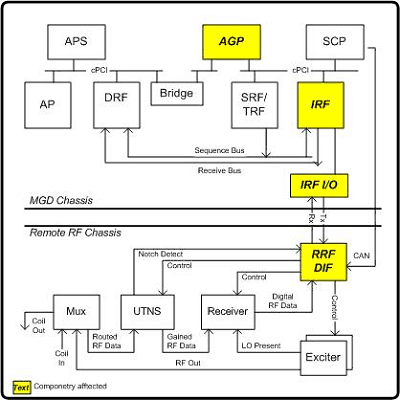

Proprietary to General Electric Company
Direction 5440000, Rev# 5
Signa HDxt Service Methods
Module Version 1.0, Version Date 4/26/07
Proprietary to General Electric Company |
Diagnostics >> RRF Chassis >> RRF BLD
This diagnostic confirms the presence of the RRF-DIF board, and verifies the ability to write/read all of the board's registers.
RRF-DIF Registers
Tx/Rx Communications path between the IRF, IRF I/O, and RRF-DIF boards.
Minimum configuration
Host computer
MGD chassis with all processor boards, bridge, IRF, and IRF I/O board
Complete Remote RF chassis
Proper cabling
Illustration 1: DIF Board Level Diagnostic Block Diagram

For each RRF-DIF register, the AGP writes a series of values to the Command Queue, which resides on the IRF board.
The IRF board forwards each value to the RRF-DIF via the high-speed fiber connection from the IRF I/O board.
Every 256ms, the contents of the RRF-DIF registers are copied to status memory on the IRF board.
Following the delay, the AGP reads the corresponding status memory value.
Output values are judged pass or fail. In the event of failure, the details of the failure can be found in the GE System Log.
Although, in the case of errors you can click the 1st Error number to see the nature of the error, it is recommended that you view the GE System Log to view all the errors that were recorded.
Short vs. Long Tests: The short test performs a walking ones and walking zeroes pattern whereas the long test will perform a walking ones, walking zeroes, 0xaaaa, 0x5555, and possibly other patterns. As a result, selecting the long test will generally provide a longer and more exhaustive test. If the problem is highly intermittent then it may be desirable to run a long test.
Click [Calculate Time] to get an estimate of the time it will take to run the selected diagnostics.
| NOTE: | Other than Test Iterations, the Test Options settings should not be changed from their default settings unless instructed to do so by a GE Healthcare engineer. There are very few circumstances when these settings ever need to be changed. |
FR-Digital Inter Face Board Help Page:/csd/mr_csd/serviceDesktop/docs/cclass/rf-dif_board/rf-dif_board.htm